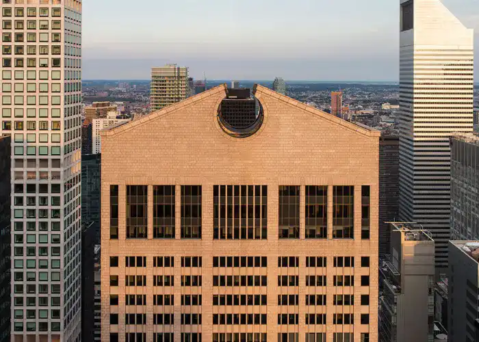

AT&T Building
The AT&T Buildings by Philip Johnson, also known as the Sony Tower, constitute a significant contribution to the architecture of New York. Designed by Johnson in collaboration with John Burgee, the buildings were completed in 1984. Their distinctive design includes monumental arches at the top of each tower, imparting an imposing aesthetic to the Manhattan skyline. These structures were built as the corporate headquarters for AT&T. Although Johnson was not directly involved in later renovations or changes in the use of the buildings, his influence persists in the distinctive character of these New York architectural icons.

Pictures of the AT&T Building